micro:bit
Sensorwerkstatt
Sechs Lernstraßen für Klasse 7–9 · ca. 35–45 Minuten je Station · Teams zu zweit
MakeCode öffnen Vorbereitung für die Lehrkraft
So arbeitet ihr
- Lest, was der Sensor misst. Eine Person steckt, die andere gleicht jede Leitung mit der Tabelle ab.
- Wählt zuerst den Breadboard-Aufbau oder die Direktverbindung. Übertragt das Testprogramm. Prüft die Reaktion am echten Sensor.
- Zieht den Strom ab und baut dieselbe Schaltung in der anderen Variante auf. Ladet das Programm erneut, falls sich ein anderes Projekt auf dem micro:bit befindet. Prüft dieselbe Reaktion.
- Wählt ein Miniprojekt. Baut die Blöcke nach, testet die verlangten Fälle und zeigt das Ergebnis einem anderen Team.
Für jeden Aufbau
micro:bit mit USB-Datenkabel, Breadboard, Steckleitungen und Krokoklemmen. Bei den großen Ringen steht 0 für P0, 1 für P1 und 2 für P2. Direktaufbau bedeutet, dass der Sensor bzw. der Spannungsteiler über Leitungen an den großen Ringen hängt. Haltet die blanken Klemmen und Bauteilbeinchen auseinander. Beim Umstecken USB und Batteriefach abziehen. 3V und GND dürfen sich nicht berühren. Externe 5-V-Signale gehören nicht an die Signalpins.
MakeCode in einer Minute
Neues Projekt → Blöcke. Grundlagen enthält „dauerhaft“, Anzeige und Pause. Eingabe enthält das Ereignis für Knopf A oder B. Fortgeschritten → Pins enthält die analogen und digitalen Leseblöcke. Unter Variablen legst du Messwerte und Grenzen an, unter Logik findest du Vergleiche und wenn/sonst. Ein eingerückter Block gehört in den Block darüber. Die Blockgrafiken werden direkt mit dem offiziellen deutschen MakeCode-Renderer erzeugt und entsprechen den Blöcken im Editor. Sonar kann wegen der Erweiterung einen englischen Blocknamen anzeigen.
Mit Herunterladen das Programm auf den micro:bit übertragen. Falls nötig, die HEX-Datei auf das Laufwerk MICROBIT kopieren. Den Messwert am echten Gerät ablesen.
Messwert und Schaltgrenze
Analog bedeutet hier eine Zahl von 0 bis 1023. Digital bedeutet 0 oder 1. Eine Schaltgrenze liegt zwischen zwei beobachteten Werten. Beispiel: Aus 260 und 740 wird (260 + 740) ÷ 2 = 500.
1. LDR · Lichtdetektiv
Ein LDR ist ein lichtabhängiger Widerstand. Im Hellen sinkt sein Widerstand. Zusammen mit 10 kΩ entsteht ein Spannungsteiler. Bei diesem Aufbau steigt der Wert an P0, wenn mehr Licht auf den LDR fällt.
Material · LDR (z. B. GL5528), 10-kΩ-Widerstand, Papier zum Abdecken, Taschenlampe.
1 · Schaltung bauen
Mit Breadboard
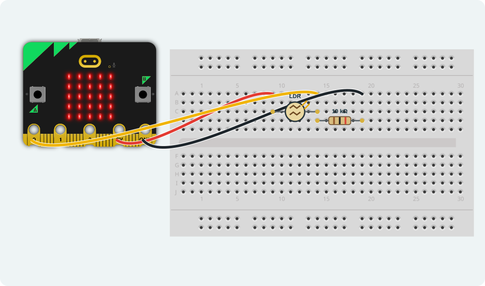
Schaltbild vergrößern| Reihe | a | b | c | d | e |
|---|
| 10 | 3V | ○ | LDR | ○ | ○ |
| 15 | P0 | ○ | LDR | 10 kΩ | ○ |
| 20 | GND | ○ | ○ | 10 kΩ | ○ |
| Reihe | Kabel zum micro:bit | Bauteilbeinchen |
|---|
| 10 | 3V → a10 | LDR → c10 |
| 15 | P0 → a15 | LDR → c15 · 10 kΩ → d15 |
| 20 | GND → a20 | 10 kΩ → d20 |
Nutze die Seite a–e. Innerhalb jeder angegebenen Reihe sind a bis e leitend verbunden. Bei kleineren Boards kannst du die Reihen verschieben.
Direkt am micro:bit
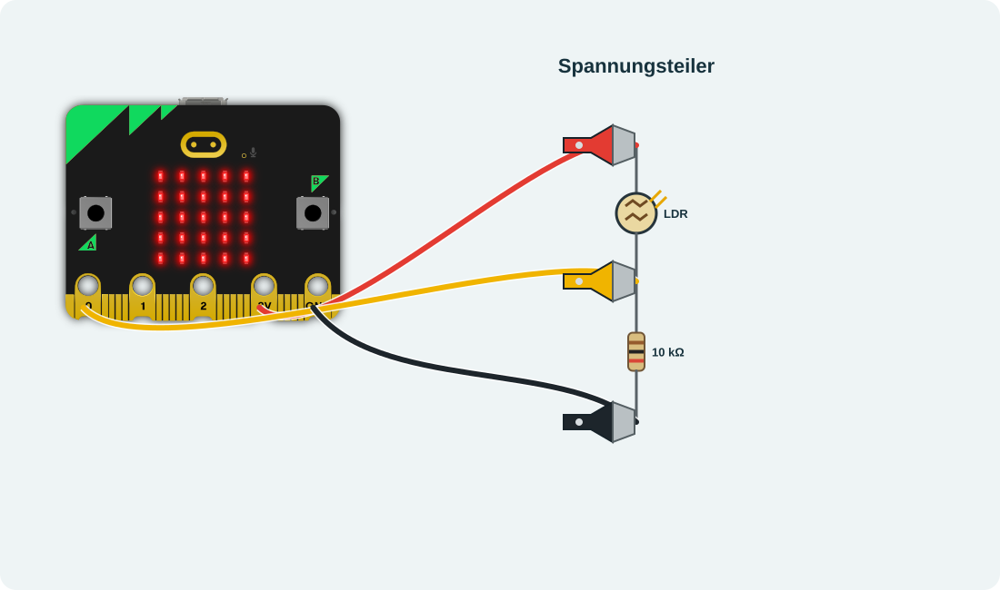
Schaltbild vergrößern3V─LDR─● P0─10 kΩ─GND
Verbinde je ein Bein der beiden Bauteile miteinander. Klemme P0 an diese gemeinsame Mitte. Klemme die zwei freien Beinchen nach der Skizze an 3V und GND.
Vor dem Stecken
In welche Reihe kommt die Verbindung zwischen LDR, Festwiderstand und P0?
Lösung zur Selbstkontrolle
In Reihe 15. Die Klemmenvariante hat denselben gemeinsamen Knoten.
2 · Startprogramm stecken
Checkpoint · Decke nur den LDR mit Papier ab. Lies den Wert mit A ab. Leuchte dann auf den LDR und drücke erneut A. Dunkel: ___ · Hell: ___ . Der Hellwert muss größer sein. Prüfe das Verhalten in beiden Aufbauvarianten.
Nach dem Messen
Dunkel ergibt 200, hell 800. Bei welcher Grenze könnte dein Nachtlicht einschalten?
Lösung zur Selbstkontrolle
Zum Beispiel 500. Für das Nachtlicht gilt: unter 500 leuchtet der Stern.
Fehlersuche · Wenn der Wert verkehrt herum reagiert, kontrolliere LDR an 3V und 10 kΩ an GND. Bei einem starren Extremwert prüfe zuerst die Verbindung von P0 zur Mitte.
3 · Miniprojekt wählen
Die Zahlen in den Blockgrafiken sind Beispiele. Setze deine eigenen gemessenen Grenzwerte ein.
Starte für die Aufgabe ein neues Projekt oder ersetze die Blöcke des Tests. Klappe bei Bedarf die Lösung auf.
Nachtlicht fürs Minihaus · G
Im Papphaus soll nachts ein Stern leuchten. Berechne die Mitte aus deinen beiden Messwerten. Teste mit Abdecken, Beleuchten und erneutem Abdecken.
Blocklösung
dauerhaft
setze licht auf analoge Werte von Pin P0
wenn licht < grenze dann
sonst
pausiere (ms) 100
Lege grenze als Variable an und setze sie beim Start auf deine berechnete Mitte.
Der Kekswächter · M
Lege den Sensor in eine geschlossene Schachtel. Öffnest du den Deckel, bleibt ein X sichtbar, bis jemand den Alarm mit A zurücksetzt. Teste zweimal öffnen, schließen und zurücksetzen.
Blocklösung
beim Start
setze grenze auf 500
setze alarm auf 0
dauerhaft
wenn analoge Werte von Pin P0 > grenze dann
pausiere (ms) 100
Miss grenze mit geschlossenem und offenem Deckel neu. Setze A erst bei geschlossenem Deckel ein.
Extra · E · Miss unter zwei Lampen mit unterschiedlicher Helligkeit. Kannst du Hell, Dämmerung und Dunkel mit zwei Grenzen trennen?
Selbstkontrolle
Decke den LDR ab, leuchte darauf und decke ihn erneut ab. Sage vorher, was dein Programm jeweils zeigen soll.
Lösung zur Selbstkontrolle
Nachtlicht: Stern, leer, Stern. Kekswächter: Deckel öffnen, X bleibt nach dem Schließen, A löscht es.
4K-Teamauftrag
Kritisches Denken
Das Nachtlicht reagiert auf die Taschenlampe, aber kaum auf das Zimmerlicht. Wo würdest du noch einmal messen?
Kreativität
Baue aus Papier eine kleine Blende und mache die Schaltung gezielt für Licht aus einer Richtung empfindlich.
Kommunikation
Zeige einem anderen Team eure Hell- und Dunkelwerte und begründe eure Schaltgrenze.
Kollaboration
Eine Person hält die Lichtsituation konstant, die andere liest ab. Tauscht für den Kontrollversuch.
2. Poti · Drehregler
Ein Potentiometer ist ein verstellbarer Spannungsteiler. Der mittlere Anschluss heißt Schleifer. Beim Drehen ändert sich die Spannung an P0. Das Poti misst hier die Stellung des Drehknopfs.
Material · Lineares 10-kΩ-Poti (B10K), ggf. mit aufsteckbarem Knopf und Anschlussbeinchen.
1 · Schaltung bauen
Mit Breadboard
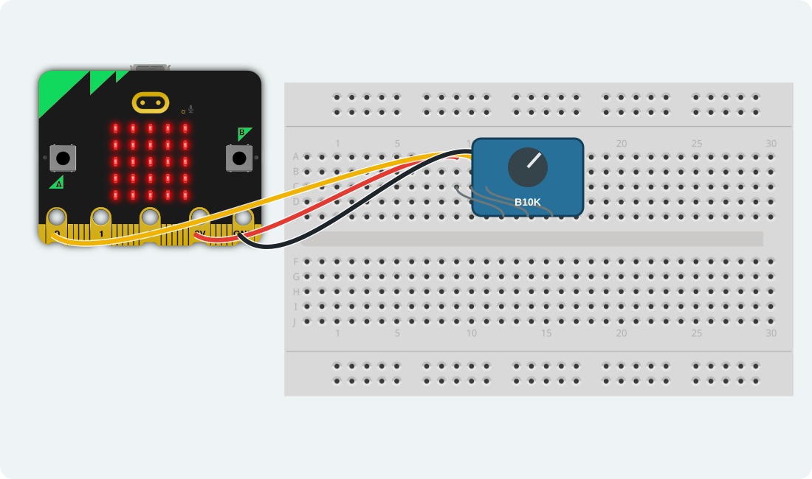
Schaltbild vergrößern| Reihe | a | b | c | d | e |
|---|
| 10 | 3V | ○ | Außen 1 | ○ | ○ |
| 11 | P0 | ○ | Schleifer | ○ | ○ |
| 12 | GND | ○ | Außen 2 | ○ | ○ |
| Reihe | Kabel zum micro:bit | Poti |
|---|
| 10 | 3V → a10 | Außen 1 → c10 |
| 11 | P0 → a11 | Schleifer → c11 |
| 12 | GND → a12 | Außen 2 → c12 |
Nutze die Seite a–e. Innerhalb jeder angegebenen Reihe sind a bis e leitend verbunden. Bei kleineren Boards kannst du die Reihen verschieben.
Direkt am micro:bit
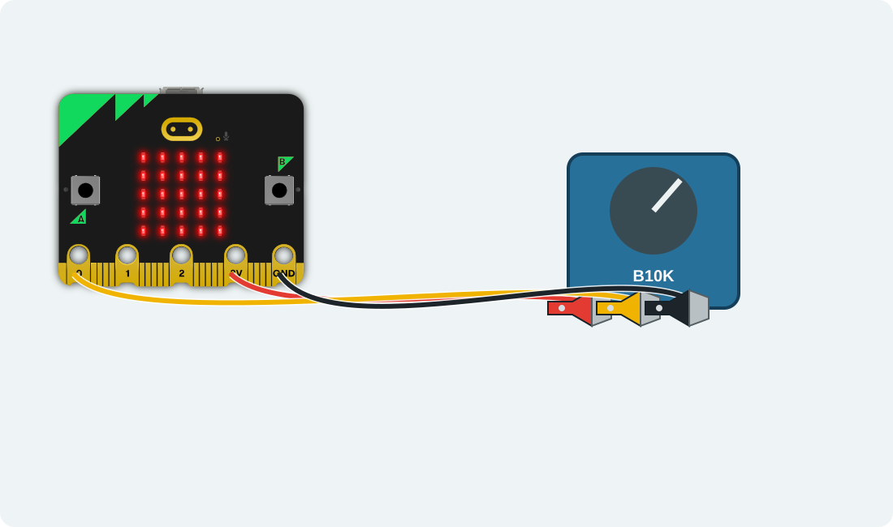
Schaltbild vergrößern3VAußen 1P0SchleiferGNDAußen 2
Verbinde die drei Poti-Anschlüsse einzeln. Hat dein Poti keine passenden Steckbeinchen, führe seine drei Anschlüsse mit Leitungen zu den angegebenen Reihen.
Vor dem Stecken
Welcher Anschluss gehört an P0?
Lösung zur Selbstkontrolle
Der Schleifer, bei diesem Poti der mittlere Anschluss.
2 · Startprogramm stecken
Checkpoint · Dreh zum linken Anschlag und drücke A. Wiederhole in der Mitte und am anderen Anschlag. Werte: ___ / ___ / ___ . An den Anschlägen erwartest du ungefähr 0 und 1023 in beliebiger Reihenfolge. Prüfe das Verhalten in beiden Aufbauvarianten.
Nach dem Messen
Was passiert mit der Drehrichtung der Anzeige, wenn du nur die beiden Außenanschlüsse tauschst?
Lösung zur Selbstkontrolle
Der Messwert steigt in der anderen Drehrichtung. P0 bleibt am Schleifer.
Fehlersuche · Falls der Wert beim Rechtsdrehen sinkt und du ihn steigend haben willst, tausche die beiden äußeren Anschlüsse. P0 bleibt am Schleifer.
3 · Miniprojekt wählen
Starte für die Aufgabe ein neues Projekt oder ersetze die Blöcke des Tests. Klappe bei Bedarf die Lösung auf.
Lautstärke fürs Kopfkino · G
Baue eine Lautstärkeanzeige für ein fiktives Mischpult. An einem Anschlag soll die Anzeige fast leer sein, in der Mitte halb voll und am anderen Anschlag voll.
Blocklösung
dauerhaft
zeichne Balkendiagramm von analoge Werte von Pin P0 bis 1023
pausiere (ms) 100
Den Balkenblock findest du unter LED. Das ist eine Anzeige für die Reglerstellung.
Tresor für den letzten Keks · M
Stell einen geheimen Drehbereich ein. Drücke A, um zu prüfen. Ein Häkchen öffnet den Papp-Tresor, ein X weist dich ab. Teste unterhalb, innerhalb und oberhalb des Fensters.
Blocklösung
450–550 ist ein Startbereich. Ermittle einen eigenen Code und ändere beide Grenzen.
Extra · E · Erweitere den Tresor um einen zweiten gültigen Bereich. Wie verschachtelst du und/oder?
Selbstkontrolle
Prüfe beide Anschläge und die Mitte. Beim Tresor prüfst du außerdem knapp unter, im und knapp über dem Codebereich.
Lösung zur Selbstkontrolle
Balken: niedrig, etwa halb und voll. Tresor: X, Häkchen, X für die drei Codepositionen.
4K-Teamauftrag
Kritisches Denken
Ist ein sehr schmaler Codebereich im Alltag brauchbar? Probiere zwei Breiten mehrfach aus.
Kreativität
Entwirf eine Skala für ein Mischpult oder für einen Tresor in einem Escape Room.
Kommunikation
Erkläre die Funktion des Schleifers anhand eurer drei Messwerte.
Kollaboration
Ein Teammitglied stellt den Regler ein, das andere prüft Anzeige und Code. Wechselt anschließend die Rollen.
3. NTC · Wärmespürnase
Ein NTC ist ein Temperaturfühler. Sein Widerstand sinkt, wenn er wärmer wird. Mit dem NTC auf der 3V-Seite steigt dabei der Wert an P0. Dieser Rohwert zeigt eine Veränderung an.
Material · 10-kΩ-NTC bei 25 °C, 10-kΩ-Festwiderstand, optional trockene handwarme Unterlage.
1 · Schaltung bauen
Mit Breadboard
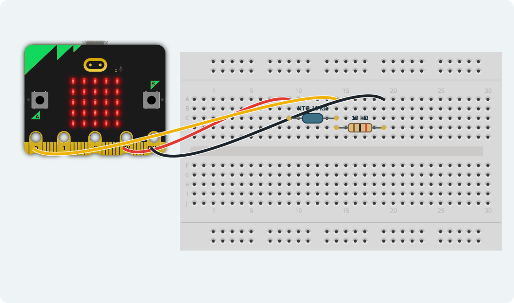
Schaltbild vergrößern| Reihe | a | b | c | d | e |
|---|
| 10 | 3V | ○ | NTC 10 kΩ | ○ | ○ |
| 15 | P0 | ○ | NTC 10 kΩ | 10 kΩ | ○ |
| 20 | GND | ○ | ○ | 10 kΩ | ○ |
| Reihe | Kabel zum micro:bit | Bauteilbeinchen |
|---|
| 10 | 3V → a10 | NTC 10 kΩ → c10 |
| 15 | P0 → a15 | NTC 10 kΩ → c15 · 10 kΩ → d15 |
| 20 | GND → a20 | 10 kΩ → d20 |
Nutze die Seite a–e. Innerhalb jeder angegebenen Reihe sind a bis e leitend verbunden. Bei kleineren Boards kannst du die Reihen verschieben.
Direkt am micro:bit
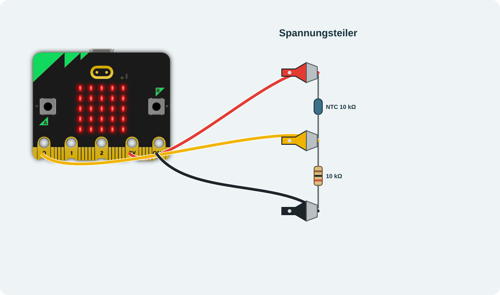
Schaltbild vergrößern3V─NTC 10 kΩ─● P0─10 kΩ─GND
Verbinde je ein Bein der beiden Bauteile miteinander. Klemme P0 an diese gemeinsame Mitte. Klemme die zwei freien Beinchen nach der Skizze an 3V und GND.
Vor dem Stecken
Woran erkennst du den gemeinsamen Messpunkt im Schaltbild?
Lösung zur Selbstkontrolle
Dort treffen P0, der NTC und der Festwiderstand zusammen.
2 · Startprogramm stecken
Checkpoint · Miss bei Raumtemperatur mit A. Halte den Fühlerkörper 20–40 Sekunden zwischen zwei Fingern und miss erneut. Raum: ___ · Warm: ___ . Erwartung: Der Warmwert ist höher. Lass den Fühler anschließend abkühlen. Prüfe das Verhalten in beiden Aufbauvarianten.
Nach dem Messen
Der NTC-Widerstand sinkt beim Erwärmen. Was macht der Messwert bei dieser Verdrahtung?
Lösung zur Selbstkontrolle
Er steigt, weil der NTC zwischen 3V und dem Messpunkt liegt.
Fehlersuche · Wenn sich wenig ändert, halte den Fühlerkörper länger fest und miss nochmals. Prüfe, ob du den NTC und den Festwiderstand an die richtigen Seiten angeschlossen hast.
3 · Miniprojekt wählen
Die Zahlen in den Blockgrafiken sind Beispiele. Setze deine eigenen gemessenen Grenzwerte ein.
Starte für die Aufgabe ein neues Projekt oder ersetze die Blöcke des Tests. Klappe bei Bedarf die Lösung auf.
Wärmealarm für die Brotdose · G
Simuliere eine Brotdose mit Temperaturwarnung. Zeige ein X, wenn du den Fühler mit der Hand erwärmst. Nach dem Abkühlen soll wieder ein Häkchen erscheinen.
Blocklösung
dauerhaft
wenn analoge Werte von Pin P0 > grenze dann
sonst
pausiere (ms) 200
Grenze = Mitte aus deinem Raumwert und deinem Warmwert.
Baby-Drachen-Inkubator · M
Der Drache soll bei leicht warmem Sensor zufrieden sein. Ist es noch kühl, schläft er. Bei starkem Erwärmen protestiert er. Zeig alle drei Zustände.
Blocklösung
beim Start
setze unten auf 515
setze oben auf 545
dauerhaft
setze waerme auf analoge Werte von Pin P0
wenn waerme < unten dann
sonst wenn waerme > oben dann
sonst
pausiere (ms) 200
Setze unten und oben beim Start. Beispiel mit Raum 480 und warm 580: unten 515, oben 545. Werte am eigenen Fühler ermitteln.
Extra · E · Verhindere Flackern an der Grenze. Beim Überschreiten der oberen Grenze Alarm einschalten, erst unter der unteren Grenze zurücksetzen.
Selbstkontrolle
Notiere den Raumwert und den Warmwert. Prüfe euer Programm beim Erwärmen und erneut nach dem Abkühlen.
Lösung zur Selbstkontrolle
Der Warmwert ist höher. Brotdose: Häkchen → X → Häkchen. Inkubator: Bei passenden Grenzen sind alle drei Anzeigen erreichbar.
4K-Teamauftrag
Kritisches Denken
Warum braucht derselbe Alarm eventuell eine neue Grenze, wenn ihr ihn draußen testet?
Kreativität
Zeichne drei eigene LED-Symbole, mit denen der Drache Kälte, Wohlfühltemperatur und Wärme zeigt.
Kommunikation
Erkläre, was ihr gemessen habt und warum der Rohwert keine Temperatur in Grad Celsius ist.
Kollaboration
Eine Person gibt das Startsignal und misst die Zeit. Die andere erwärmt den Fühler und hält sich an die vereinbarte Dauer.
4. PTC · Wärme mit Rückwärtsgang
Ein PTC-Temperaturfühler hat einen positiven Temperaturkoeffizienten. Sein Widerstand steigt bei Wärme. Mit dem PTC auf der 3V-Seite sinkt der Wert an P0. Beim NTC war es genau umgekehrt.
Material · Widerstands-Temperaturfühler KTY81/110 (1 kΩ bei 25 °C), 1-kΩ-Festwiderstand.
1 · Schaltung bauen
Mit Breadboard
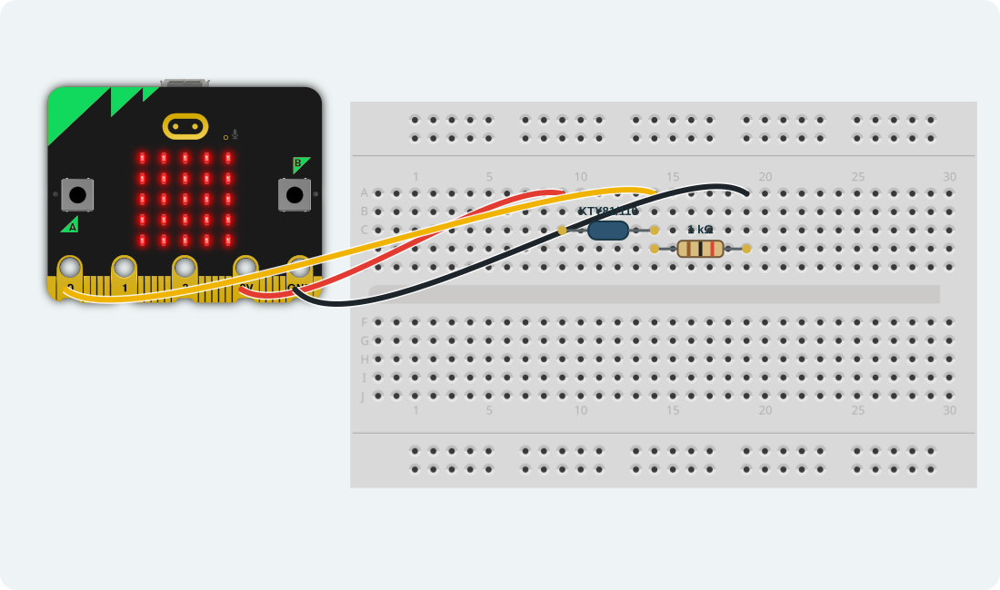
Schaltbild vergrößern| Reihe | a | b | c | d | e |
|---|
| 10 | 3V | ○ | PTC KTY81/110 | ○ | ○ |
| 15 | P0 | ○ | PTC KTY81/110 | 1 kΩ | ○ |
| 20 | GND | ○ | ○ | 1 kΩ | ○ |
| Reihe | Kabel zum micro:bit | Bauteilbeinchen |
|---|
| 10 | 3V → a10 | PTC KTY81/110 → c10 |
| 15 | P0 → a15 | PTC KTY81/110 → c15 · 1 kΩ → d15 |
| 20 | GND → a20 | 1 kΩ → d20 |
Nutze die Seite a–e. Innerhalb jeder angegebenen Reihe sind a bis e leitend verbunden. Bei kleineren Boards kannst du die Reihen verschieben.
Direkt am micro:bit
Schaltbild vergrößern3V─PTC KTY81/110─● P0─1 kΩ─GND
Verbinde je ein Bein der beiden Bauteile miteinander. Klemme P0 an diese gemeinsame Mitte. Klemme die zwei freien Beinchen nach der Skizze an 3V und GND.
Vor dem Stecken
Welchen Festwiderstand braucht der KTY81/110 in diesem Aufbau?
Lösung zur Selbstkontrolle
1 kΩ. Er verbindet P0 mit GND.
2 · Startprogramm stecken
Checkpoint · Lies den Raumwert mit A. Halte den Fühlerkörper 20–40 Sekunden zwischen zwei Fingern und miss erneut. Raum: ___ · Warm: ___ . Der Warmwert sollte niedriger sein. Ein kleiner Unterschied reicht. Prüfe das Verhalten in beiden Aufbauvarianten.
Nach dem Messen
Raumwert 510, Warmwert 480. Welcher Vergleich löst bei der Grenze 495 den Alarm aus?
Lösung zur Selbstkontrolle
Messwert < 495. Beim Erwärmen sinkt hier der Wert.
Fehlersuche · Achte auf 1 kΩ beim KTY81/110. Verwende einen Temperaturfühler dieses Typs. PTC-Sicherungen haben eine andere Kennlinie und eignen sich hier schlecht.
3 · Miniprojekt wählen
Die Zahlen in den Blockgrafiken sind Beispiele. Setze deine eigenen gemessenen Grenzwerte ein.
Starte für die Aufgabe ein neues Projekt oder ersetze die Blöcke des Tests. Klappe bei Bedarf die Lösung auf.
Motorschutz am Modell · G
Spiele einen warm werdenden Motor nach, indem du den Fühler anfasst. Bei Wärme erscheint ein X, nach dem Abkühlen ein Häkchen. Es genügt die LED-Anzeige.
Blocklösung
dauerhaft
wenn analoge Werte von Pin P0 < grenze dann
sonst
pausiere (ms) 200
Grenze = Mitte aus Raum- und Warmwert. Der Vergleich ist hier kleiner als.
Handwärme-Rekord · M
Wer schafft den größten Abfall vom aktuellen Raumwert? A speichert die Ausgangslage, B zeigt den besten Unterschied. Lass den Fühler zwischen den Versuchen abkühlen.
Blocklösung
beim Start
setze basis auf analoge Werte von Pin P0
setze rekord auf 0
dauerhaft
setze differenz auf basis − analoge Werte von Pin P0
wenn differenz > rekord dann
setze rekord auf differenz
pausiere (ms) 200
Eine Runde beginnt mit A. Fühler gleich lang anfassen. Vergleicht Punktwerte bei gleicher Startbedingung.
Extra · E · Zeichne ein kleines Diagramm aus drei Messungen beim Abkühlen. Vergleiche die Richtung mit den Messwerten des NTC.
Selbstkontrolle
Miss zuerst kalt, dann warm. Prüfe, ob der Alarm auf Wärme reagiert oder ob der Rekord nach dem Erwärmen größer als null ist.
Lösung zur Selbstkontrolle
Motorschutz: X bei warm, Häkchen nach dem Abkühlen. Rekord: Start mit A, B zeigt den größten Abfall seit dem Start.
4K-Teamauftrag
Kritisches Denken
Wie sorgt ihr dafür, dass der Handwärme-Rekord für beide Personen unter gleichen Bedingungen abläuft?
Kreativität
Entwerft eine Motorschutzanzeige mit einem zusätzlichen Vorwarnsymbol.
Kommunikation
Erklärt den Unterschied zwischen NTC und PTC anhand eurer Messrichtung.
Kollaboration
Ein Teammitglied dokumentiert Start- und Endwert. Das andere wärmt den Fühler. Wechselt nach dem Abkühlen.
5. IR-Modul · Unsichtbarer Türsteher
Die IR-LED sendet unsichtbares Infrarotlicht. Ein Gegenstand kann Licht zum Empfänger zurückwerfen. Der Regler am Modul bestimmt den Schaltpunkt. DOUT liefert 0 oder 1. Farbe, Abstand und Beleuchtung beeinflussen die Erkennung.
Material · Waveshare Infrared Reflective Sensor ST188 (3,0–5,3 V), passende 4-polige Anschlussleitung, weißer Karton, schwarzes Papier, kleiner Schraubendreher.
1 · Schaltung bauen
Mit Breadboard
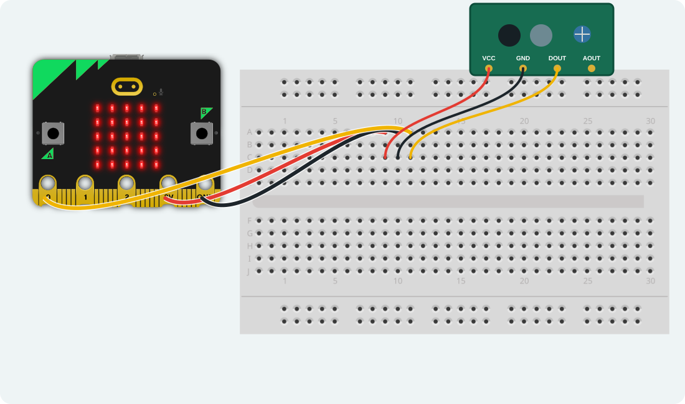
Schaltbild vergrößern| Reihe | a | b | c | d | e |
|---|
| 10 | 3V | ○ | VCC | ○ | ○ |
| 11 | GND | ○ | GND | ○ | ○ |
| 12 | P0 | ○ | DOUT | ○ | ○ |
| Reihe | Kabel zum micro:bit | Kabel vom Modul |
|---|
| 10 | 3V → a10 | VCC → c10 |
| 11 | GND → a11 | GND → c11 |
| 12 | P0 → a12 | DOUT → c12 |
AOUT bleibt frei.
Nutze die Seite a–e. Innerhalb jeder angegebenen Reihe sind a bis e leitend verbunden. Bei kleineren Boards kannst du die Reihen verschieben.
Direkt am micro:bit
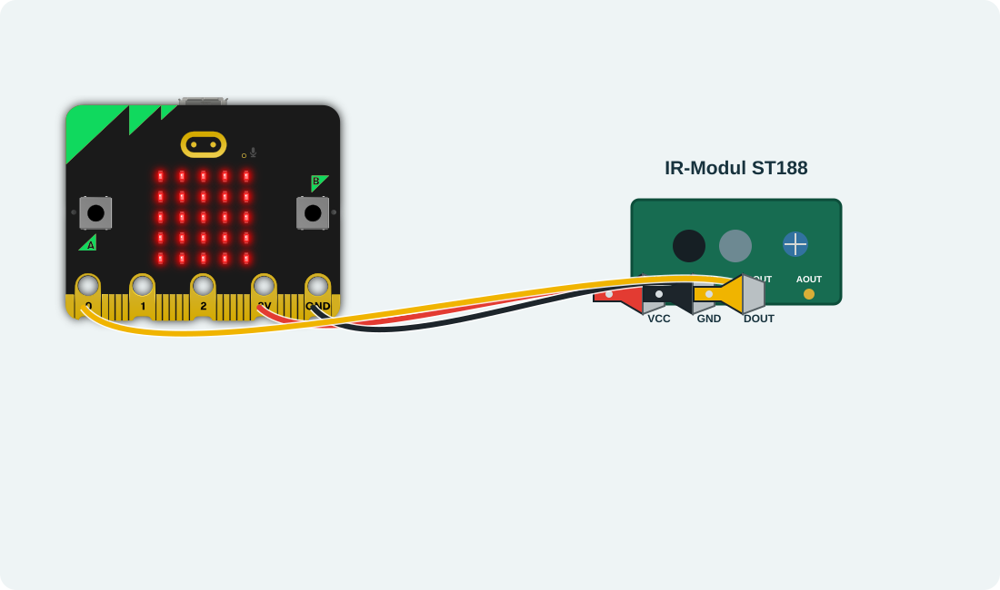
Schaltbild vergrößern| Modul | micro:bit |
|---|
| VCC | 3V |
| GND | GND |
| DOUT | P0 |
| AOUT | frei |
Verbinde jeden beschrifteten Modulanschluss einzeln mit der angegebenen Klemme. Benutze passende Buchsenleitungen oder die mitgelieferte Anschlussleitung.
Vor dem Stecken
Welcher Modulausgang gehört für diesen Versuch an P0?
Lösung zur Selbstkontrolle
DOUT. AOUT bleibt frei.
2 · Startprogramm stecken
Checkpoint · Halte weißen Karton sehr nah vor den Sensor. Vergleiche per A mit freiem Sensor. Drehe den kleinen Modulregler schrittweise, bis DOUT sicher zwischen 0 und 1 wechselt. Notiere frei = ___ und erkannt = ___ . Prüfe das Verhalten in beiden Aufbauvarianten.
Nach dem Messen
Weiß funktioniert zuverlässig, Schwarz manchmal nicht. Welche Erklärung passt?
Lösung zur Selbstkontrolle
Oberflächen werfen unterschiedlich viel Infrarotlicht zurück. Störlicht und Abstand beeinflussen den Test ebenfalls.
Fehlersuche · Nutze DOUT. Bei ständig gleichem Wert den Schaltpunkt nachstellen, Karton näher heranführen und direkte Sonne vermeiden. Übernimm dein gemessenes „erkannt“ in die Projekte.
3 · Miniprojekt wählen
In der Grafik steht 0 als Beispiel. Setze erkannt auf den Wert, den du mit Karte gemessen hast.
Starte für die Aufgabe ein neues Projekt oder ersetze die Blöcke des Tests. Klappe bei Bedarf die Lösung auf.
Kontaktlose Türglocke · G
Eine Hand oder weiße Karte vor dem Sensor ergibt ein Häkchen. Entfernst du sie, wird die Anzeige leer. Probier danach schwarze Pappe im gleichen Abstand.
Blocklösung
dauerhaft
wenn digitale Werte von Pin P0 = erkannt dann
sonst
pausiere (ms) 80
Nutze 0 oder 1 aus dem Checkpoint.
Keks-Kasse · M
Zähle jede helle Karte genau einmal, auch wenn sie einen Moment liegen bleibt. Taste B zeigt den Gesamtstand. Teste mit drei einzeln durchgeschobenen Karten.
Blocklösung
beim Start
setze anzahl auf 0
setze vorher auf 0
setze erkannt auf 0
dauerhaft
wenn digitale Werte von Pin P0 = erkannt dann
sonst
pausiere (ms) 50
vorher merkt sich, ob eben schon eine Karte erkannt wurde. Zwischen Karten muss DOUT kurz frei melden.
Extra · E · Teste Weiß, Schwarz und Alufolie in gleicher Entfernung. Welche Oberfläche würde für einen Kartenzähler bei wechselndem Licht am besten funktionieren?
Selbstkontrolle
Halte eine weiße Karte kurz vor den Sensor, entferne sie und wiederhole den Test. Beim Zähler halte eine Karte zwei Sekunden still.
Lösung zur Selbstkontrolle
Die Türglocke zeigt nur bei erkannter Karte ein Häkchen. Der Zähler erhöht sich pro neu erkannter Karte einmal.
4K-Teamauftrag
Kritisches Denken
Prüft nacheinander Material und Abstand. Ändert pro Versuch genau eine davon.
Kreativität
Baut eine Führung aus Pappe, die jede Karte im gleichen Abstand am Sensor vorbeiführt.
Kommunikation
Erklärt euer gemessenes Signal für frei und erkannt und zeigt es am echten Sensor.
Kollaboration
Eine Person führt die Karten, die andere prüft den Zählerstand. Wechselt für den zweiten Durchlauf.
6. Ultraschall · Echo-Einparkhilfe
Der Sensor sendet einen kurzen Ton, den Menschen nicht hören. Eine harte Fläche wirft ihn zurück. Aus der Zeit für Hin- und Rückweg lässt sich die Entfernung berechnen. Der Sonar-Block führt die Messung für dich aus.
Material · HC-SR04-33 (3,3–5 V, ausdrücklich die -33-Variante), vier passende Leitungen, Lineal, Pappwand. Verwende am 3V-Ring nur eine von der Lehrkraft geprüfte Kombination. Falls du eine vorbereitete 3,3-V-Versorgung bekommst, kommt VCC dorthin. GND der Versorgung, Sensor-GND und micro:bit-GND werden verbunden.
1 · Schaltung bauen
Mit Breadboard
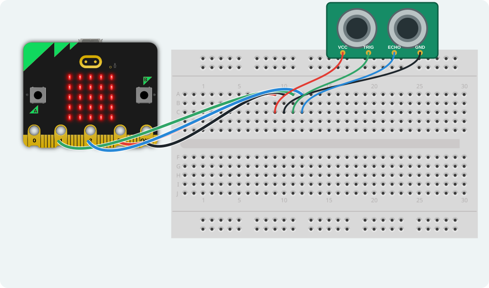
Schaltbild vergrößern| Reihe | a | b | c | d | e |
|---|
| 10 | 3V | ○ | VCC | ○ | ○ |
| 11 | GND | ○ | GND | ○ | ○ |
| 12 | P1 | ○ | TRIG | ○ | ○ |
| 13 | P2 | ○ | ECHO | ○ | ○ |
| Reihe | Kabel zum micro:bit | Kabel vom Modul |
|---|
| 10 | 3V → a10 | VCC → c10 |
| 11 | GND → a11 | GND → c11 |
| 12 | P1 → a12 | TRIG → c12 |
| 13 | P2 → a13 | ECHO → c13 |
Nutze die Seite a–e. Innerhalb jeder angegebenen Reihe sind a bis e leitend verbunden. Bei kleineren Boards kannst du die Reihen verschieben.
Direkt am micro:bit
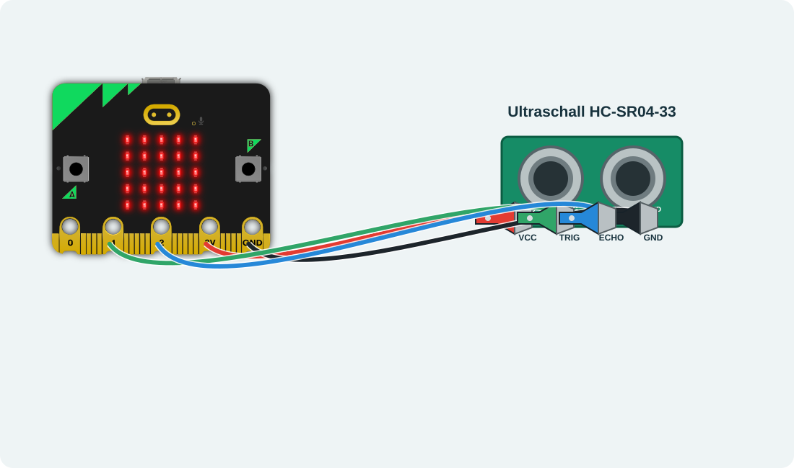
Schaltbild vergrößern| Modul | micro:bit |
|---|
| VCC | 3V |
| GND | GND |
| TRIG | P1 |
| ECHO | P2 |
Verbinde jeden beschrifteten Modulanschluss einzeln mit der angegebenen Klemme. Benutze passende Buchsenleitungen oder die mitgelieferte Anschlussleitung.
Vor dem Stecken
Welche Leitung startet die Messung? Welche liefert die gemessene Echozeit?
Lösung zur Selbstkontrolle
TRIG an P1 startet. ECHO an P2 liefert den Impuls.
2 · Startprogramm stecken
Öffne Erweiterungen, suche nach https://github.com/microsoft/pxt-sonar und füge das Paket hinzu. In der Kategorie Sonar wählst du ping mit Trigger P1, Echo P2 und Zentimetern. 0 steht in diesem Versuch für fehlendes bzw. nicht verwertbares Echo.
Checkpoint · Halte eine gerade Pappwand senkrecht zum Sensor. Drücke A bei 10, 20 und 40 cm. Messwerte: ___ / ___ / ___ cm. Kleine Abweichungen sind normal. Wenn das Echo ausbleibt, erscheint ein Fragezeichen. Prüfe das Verhalten in beiden Aufbauvarianten.
Nach dem Messen
Warum gehört zu eurem Abstandstest auch ein Versuch ohne verwertbares Echo?
Lösung zur Selbstkontrolle
Die 0 aus dem Sonarblock signalisiert einen fehlenden Messwert. Das Programm zeigt dann ein Fragezeichen.
Fehlersuche · TRIG geht an P1, ECHO an P2. Teste mit harter, größerer Zielfläche und ein paar Zentimetern Mindestabstand. Überprüfe die -33-Kennzeichnung und die Versorgung. 5-V-Standardmodule brauchen eine andere Versorgung und Pegelanpassung.
3 · Miniprojekt wählen
Starte für die Aufgabe ein neues Projekt oder ersetze die Blöcke des Tests. Klappe bei Bedarf die Lösung auf.
Einparken fürs Spielzeugauto · G
Halte eine Wand vor das Auto. Bis 12 cm erscheint ein X, darüber ein Häkchen. Wenn kein Echo ankommt, erscheint ein Fragezeichen. Teste bei 8 cm, 20 cm und ohne Echo.
Blocklösung
dauerhaft
setze cm auf ping · Trigger P1 Echo P2 cm
wenn cm = 0 dann
sonst wenn cm ≤ 12 dann
sonst
pausiere (ms) 100
Lege dafür ein zweites Programm an oder entferne den A-Testblock.
Füttere das Kartonmonster · M
Die Hand bzw. Futterkarte soll bei rund 20 cm gehalten werden. Das Monster grinst bei 17 bis 23 cm, zeigt einen Pfeil nach unten bei zu großem Abstand und nach oben bei zu kleinem Abstand.
Blocklösung
dauerhaft
setze cm auf ping · Trigger P1 Echo P2 cm
wenn cm = 0 dann
sonst wenn cm < 17 dann
sonst wenn cm > 23 dann
sonst
pausiere (ms) 100
Pfeil hoch heißt weiter weg, Pfeil runter heißt näher ran. Teste bei 10, 20 und 35 cm und ohne Echo.
Extra · E · Teste eine schräge Pappwand und einen weichen Stoff. Welche Ziele verursachen Ausfälle? Zeichne eine bessere Position für den Sensor ein.
Selbstkontrolle
Halte eine gerade Pappwand bei 10 cm und 20 cm. Entferne sie dann und richte den Sensor auf einen freien Bereich ohne Treffer.
Lösung zur Selbstkontrolle
Einparkhilfe: X, Häkchen, Fragezeichen. Monster: Pfeil hoch, Smiley, Fragezeichen.
4K-Teamauftrag
Kritisches Denken
Teste bei gleichem Abstand eine gerade und eine schräge Pappe. Welches Echo könnt ihr zuverlässiger messen?
Kreativität
Entwirf ein Gehäuse für das Monster, in dem die Sensoröffnungen frei bleiben.
Kommunikation
Erklärt am Modell den Hin- und Rückweg des Schalls. Schildert, wie sich das fehlende Echo in eurem Programm zeigt.
Kollaboration
Eine Person richtet das Lineal und die Zielwand aus. Die andere liest ab und notiert. Wechselt beim nächsten Abstand.
Vorbereitung für die Lehrkraft
Material je Team
Ein micro:bit, USB-Datenkabel, ein Breadboard mit beschrifteten Reihen, vier Krokoleitungen bzw. Leitungen Krokoklemme–Stift, Jumperkabel und passende Buchsen für Module. Zuschnitt aus Pappe, schwarze und weiße Karten, kleine Schachtel, Taschenlampe und Lineal.
| Station | Bauteile je Team | Vorab prüfen |
|---|
| LDR | 1 LDR, 1 × 10 kΩ | Abgedeckt und beleuchtet ergeben deutlich getrennte Werte. |
| Poti | 1 lineares 10-kΩ-Poti | Schleifer identifizieren und Potiausführung auf Steckbarkeit prüfen. |
| NTC | 1 × 10-kΩ-NTC, 1 × 10 kΩ | Sensor mit kleiner Masse wählen. In Raumluft und mit Fingern vorab messen. |
| PTC | 1 × KTY81/110, 1 × 1 kΩ | Typ und Beschaffung prüfen. Rohwertänderung ist kleiner als beim NTC. |
| IR | 1 Waveshare ST188 mit Anschlussleitung | Bei der tatsächlich gemessenen 3V-Versorgung prüfen. Weißkarte positionieren, Trimmer bei Bedarf voreinstellen. |
| Ultraschall | 1 HC-SR04-33, 4 Leitungen | Module und 3V-Versorgung gemeinsam vorab erproben. Das Modul ist ab 3,3 V spezifiziert. Liegt der 3V-Ausgang unter 3,3 V oder misst die Kombination unzuverlässig, nutze eine geregelte 3,3-V-Modulversorgung mit gemeinsamem GND. VCC geht dann ausschließlich an diese Quelle, der micro:bit bleibt regulär versorgt. Prüfe den zulässigen Eingangspegel am eigenen Board. Sonar-Paket vor der Stunde laden. |
Ablauf für eine Doppelstunde
5–10 min gemeinsamer Start, 30–35 min erste Station, 30–35 min zweite Station, 10 min Vorführung. Sinnvolle Paare sind LDR und Poti (analoge Werte), NTC und PTC (umgekehrte Reaktion) sowie IR und Ultraschall (Schaltinformation und Distanz). Wer beide Aufbauten zum ersten Mal steckt, kann die Extra-Aufgabe in die nächste Stunde übernehmen.
Abnahme · Das Team zeigt die Reaktion in beiden Aufbauten, erklärt seinen Schaltpunkt bzw. Abstand und demonstriert die Testfälle des Projekts. Bei NTC und PTC werden Rohwerte verglichen. Die beiden Aufbauten mit Krokoklemmen kannst du auch als gegenseitige Teamkontrolle organisieren.
Quellen und technische Referenz